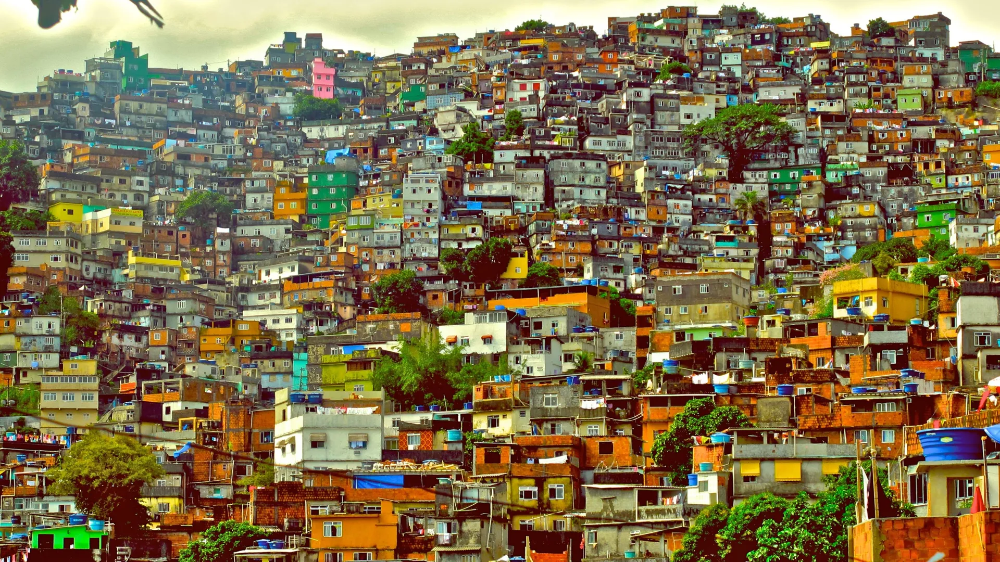
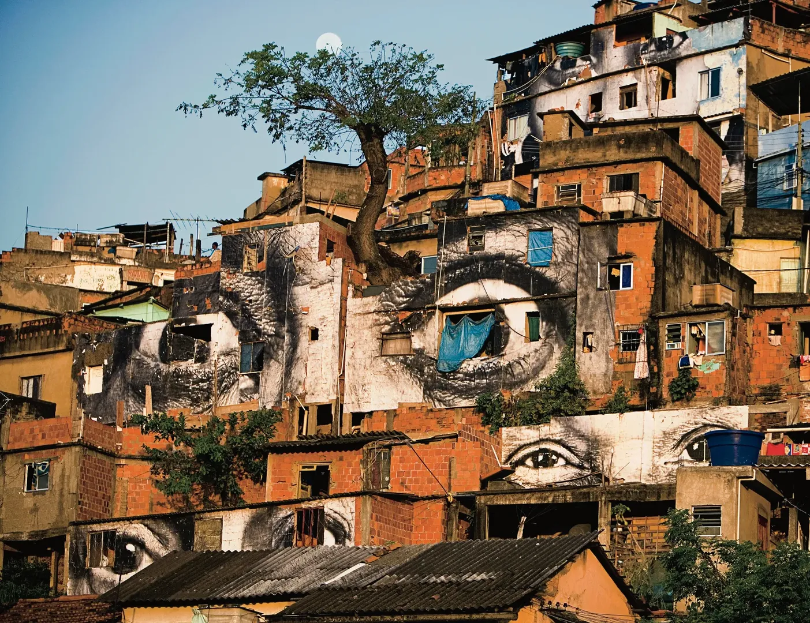
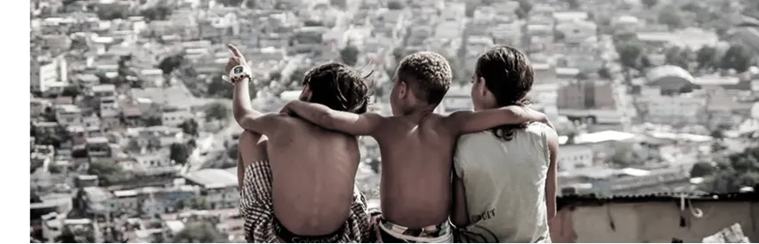

Sobre o Museu
O Museu das Favelas é um espaço de memória, arte e conhecimento, dedicado a contar as múltiplas histórias de diversas favelas do Brasil.
Suas exposições e narrativas valorizam as culturas, os saberes e as experiências que nascem nos territórios, ampliando o espaço para que diferentes vozes contem suas próprias histórias.
“Toda comunidade guarda histórias que merecem ser vistas, ouvidas e lembradas.”

Principais Obras
Conheça obras que celebram a criatividade, a memória e as vivências das favelas brasileiras.
Comprar ingresso
Antes de adquirir seu ingresso, confira as principais regras de convivência no Museu. Após isso, responda um quiz rápido para liberar sua compra.